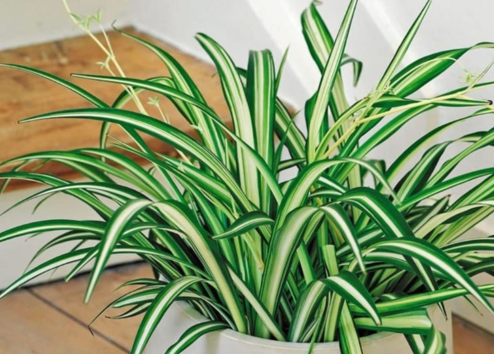

Tanaman Hias
Tanaman hias daun berwarna hijau tidak hanya bisa membuat rumah jadi tampak asri, tetapi juga bisa mempercantik area teras dan belakang rumah. Nah, berikut ini beberapa jenis tanaman hias daun yang bisa memberikan kesan tersebut. Simak, yuk.
Lidah Mertua
Lidah mertua adalah jenis tanaman hias daun yang memiliki ciri daun menyempit di pangkalnya dan meruncing di ujungnya. Tanaman hias ini biasanya punya beberapa jenis warna yang, yaitu hijau tua, hijau muda, hijau keabu-abuan, dan hijau kekuningan. Merawat tanaman lidah mertua cukup mudah. Soalnya, tanaman ini mudah beradaptasi karena bisa menyimpan cadangan air dalam jumlah besar.
Monstera
Siapa yang tidak mengenal tanaman monstera? Ya, ini salah satu tanaman yang sangat populer saat ini. Monstera memiliki ciri daun tebal berwarna hijau dengan bolongan besar di daun-daunnya. Tanaman monstera biasanya cocok diletakkan di teras rumah, yang tidak langsung terpapar sinar matahari. Hindari meletakkannya dekat paparan sinar matahari langsung karena cahaya berlebihan akan membuat daunnya menjadi kekuningan.
Rombusa Mini
Rombusa mini adalah tanaman perdu semak dengan daun yang sangat rimbun. Tanaman ini, punya beberapa jenis warna yang, antara lain hijau, kuning dan silver. Bunganya yang berwarna putih menambah penampilan cantiknya dan membuatnya cocok diletakkan di halaman dan teras rumah.
Lili Paris
Dengan daunnya yang berbentuk pita memanjang dan tipis, lili paris mendapatkan julukan tanaman bulu ayam. Tidak seperti namanya, ternyata lili paris ini berasal dari Afrika Selatan. Warna daunnya yang terang dengan aksen hijau di pinggirnya, membuat lili paris paling digemari sebagai tanaman hias.

Philodendron
Philodendron adalah tanaman hias yang memiliki ciri daun hijau berbentuk hati. Bentuknya yang unik ini, membuatnya menjadi favorit banyak orang. Selain itu, kamu juga bisa menempatkan philodendron di mana pun karena ia tidak membutuhkan sinar matahari yang berlebihan.
Kuping Gajah
Kuping Gajah memiliki daun berukuran besar dan berbentuk hati. Tanaman kuping gajah memerlukan tanah yang lembab dan bernutrisi untuk tumbuh sehingga kamu harus secara teratur merawat jenis tanaman ini.